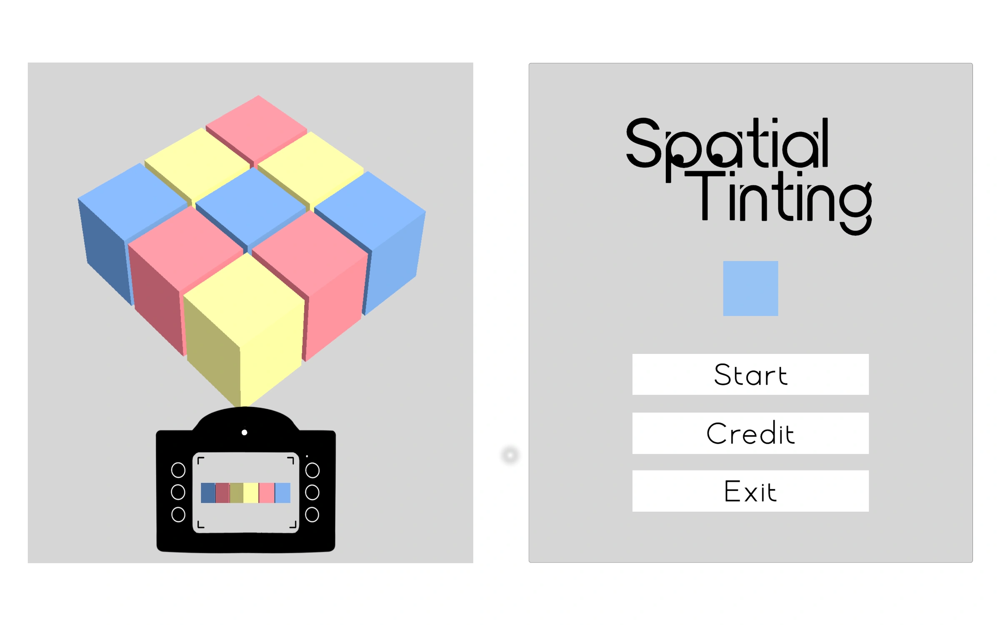
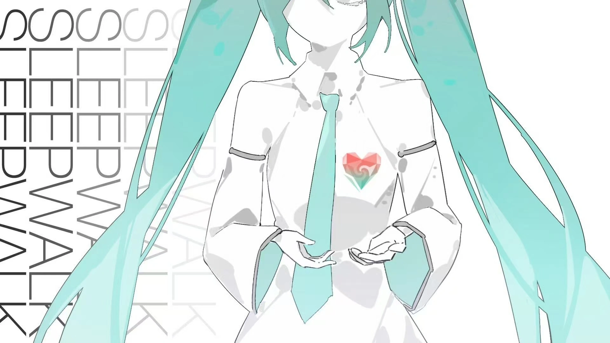
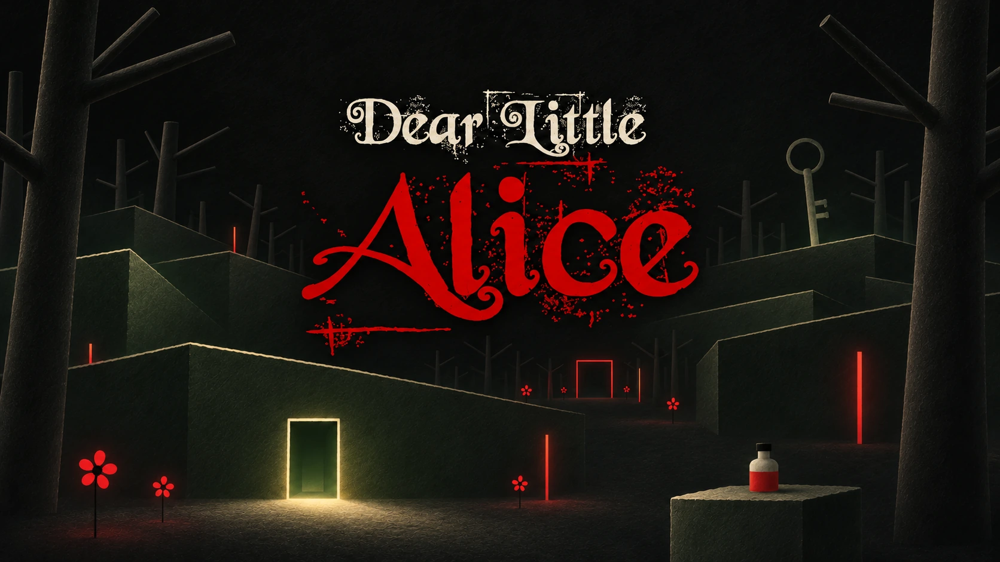
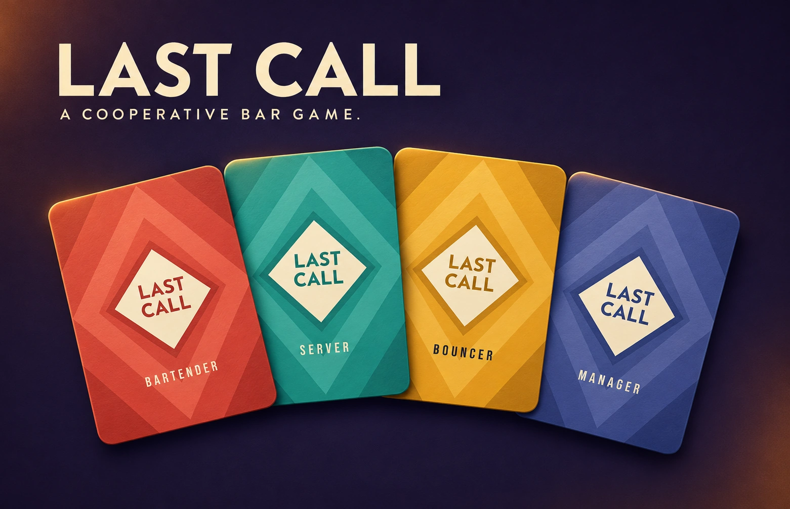
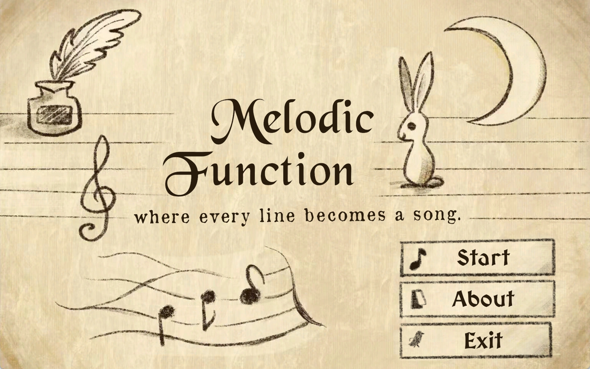
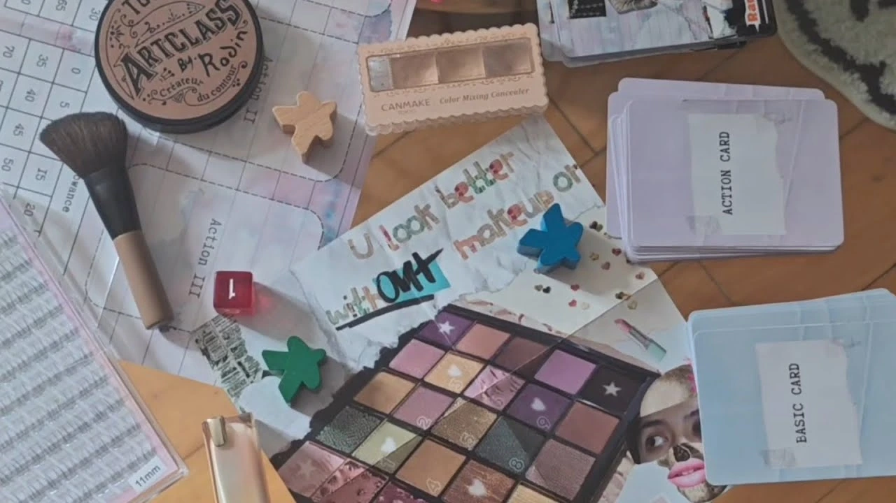
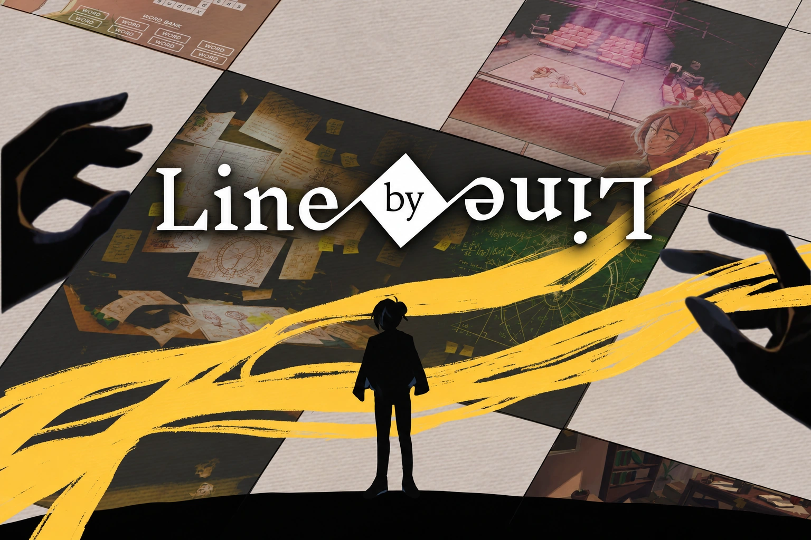
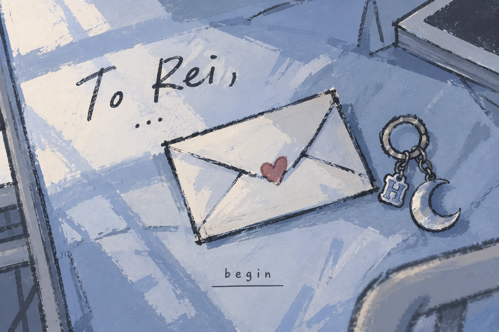
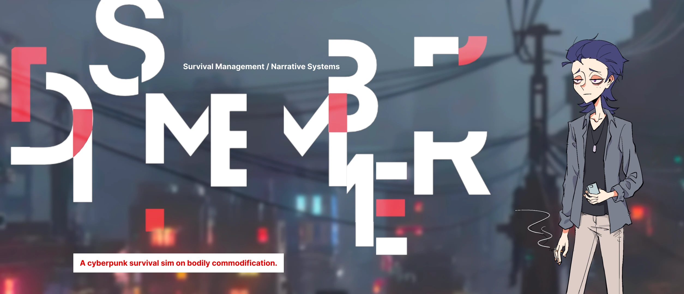
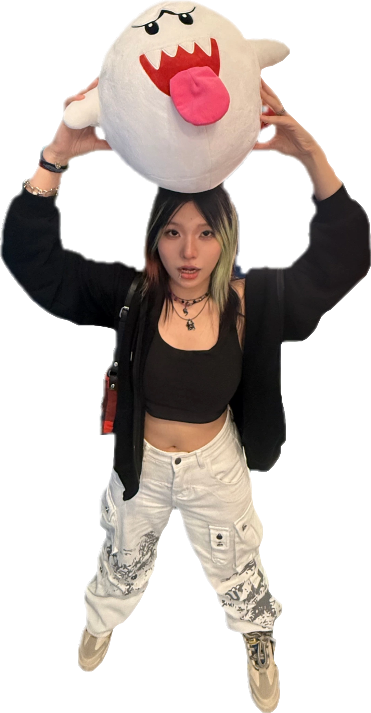

Spatial Tinting
Solo project · Sep–Nov 2025
Showing 3 selected games.

Solo project · Sep–Nov 2025

Designer & Programmer · Oct–Nov 2026

Solo project · Sep–Oct 2026

Producer & Designer · Oct 2026

Solo project · Aug–Oct 2025

Solo project · Mar–Jul 2025

Level Designer · USC AGP 2026

Solo project · Sep 2026

Lead Programmer & Systems Designer · Oct 2025

I'm an MS student in Game Design and Development at USC’s School of Cinematic Arts, with an undergraduate degree in Mathematics with Applied Mathematics from the University of Nottingham, UK.
I enjoy deck-builders like Dicey Dungeons and Slay the Spire, and story-driven games like OMORI and Doki Doki Literature Club. I also love rhythm games like maimai.
Outside of games, I’m a huge Vocaloid fan, love dancing, and get especially excited about Christmas.